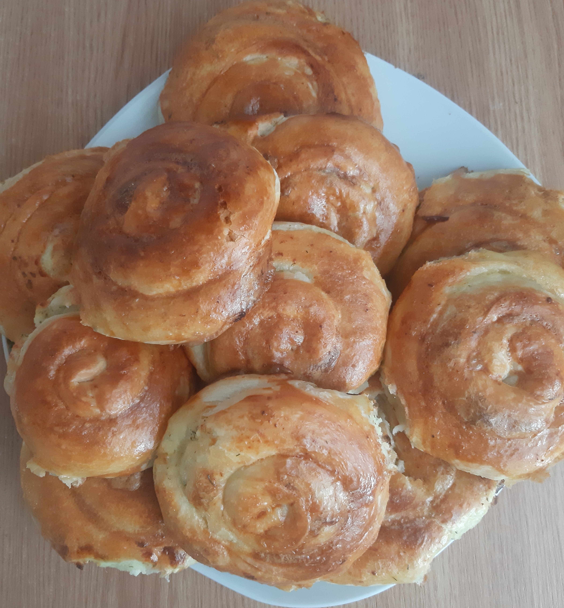

Ingrediente:
-350 ml de apă
-500 g de făină
-7 g de drojdie uscată
-50 ml de ulei
-un vârf de linguriță de zahăr și sare
-un ou
1. Cernem făina și o amestecăm cu sarea, zahărul și drojdia uscată.
2. Încălzim puțin apa, astfel încât să fie puțin mai caldă decât temperatura camerei.
3. Adăugăm 3/4 din apă și amestecăm bine până obținem un aluat potrivit de tare.
4. Frământați bine aluatul timp de 5 minute și puneți-l într-un vas acoperit pentru aproximativ o oră.
5. Porționați bucata de aluat în bucățele mai mici.
6. Cu ajutorul telului întindeți aluatul pe masă. După ce ați întins o bucată, puneți-o în farfurie și ungeți-o cu ulei. Procedați așa cu fiecare bucățică.
7. Luăm bucățile făcute anterior și le umplem cu brânză, dându-le forma de plăcinte.
8. Le punem în rolă pentru 20 minute la temperatura de 180°.
Le scoatem puțin și le ungem cu gălbenuș de ou bătut pentru se rumeni mai bine. Le lăsăm încă 30 la temperatura de 180°.
Poftă bună, dragii mei! 🤗